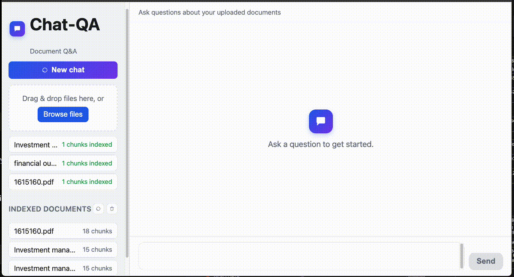

A Local-First RAG Chat App, Built to Migrate to AWS on Day One
A Local-First RAG Chat App, Built to Migrate to AWS on Day One

Most “local-first” RAG prototypes push the AWS migration to a rewrite: local embeddings become Bedrock calls, a FAISS index becomes OpenSearch, and half the retrieval code changes shape along the way. This project — a chat-QA prototype built around the finance split of UniDoc-Bench — takes the opposite approach: Bedrock is the LLM and embedding provider from the first commit, and only the storage layer is a local stand-in. Migrating later is a config and infrastructure change, not a code change.
The Trick: Swap Storage, Not the API Calls
The design constraint is simple — pick local replacements for AWS services that implement the same interface the AWS service would, so nothing upstream of storage needs to know which one it’s talking to.
| Concern | Local prototype | AWS target | What changes |
|---|---|---|---|
| LLM + embeddings | Bedrock (Claude Sonnet 4.5, Titan Embed v2) | Bedrock (same) | Nothing |
| Vector store | Chroma, persisted on disk | OpenSearch Serverless | Swap the body of one function |
| Document storage | Local disk | S3 | Swap storage_dir for a bucket |
| Chat session history | In-memory dict | DynamoDB | Add a table, swap the dict |
| Backend hosting | uvicorn --reload |
ECS Fargate behind an ALB | Same Dockerfile either way |
| Frontend hosting | python -m http.server |
S3 + CloudFront | Just hosting, no code |
The reason this works: indexer.py’s retrieval and indexing functions depend on LlamaIndex’s VectorStore interface, never on Chroma directly.
@lru_cache
def get_vector_store() -> ChromaVectorStore:
client = chromadb.PersistentClient(path=setting.chroma_dir)
collection = client.get_or_create_collection(setting.chroma_collection)
return ChromaVectorStore(chroma_collection=collection)Swapping this one function for OpensearchVectorStore pointed at a real collection is the entire vector-store migration — build_or_update_index, retrieve, list_documents, and every router that calls them stay untouched.
Architecture
backend/app/
src/
docling_parser.py # file bytes -> markdown (PDF/DOCX/PPTX/HTML/MD/TXT/XLSX)
document_parser.py # markdown -> llama_index Documents
indexer.py # chunk + embed + Chroma, chunk/doc listing
chat_agent.py # RAG chat agent (tool-calling) with per-session history
llm_model.py # Bedrock LLM + embedding model
router/
route_chat.py # POST /chat, POST /chat/{session_id}/reset
route_upload.py # /documents endpoints
frontend/
index.html, app.js, style.css # plain HTML/JS chat UI, no build stepA separate ingestion/ module (loaders, chunking, metadata, preprocessors, parser, storage) exists alongside the backend for offline experimentation — comparing a deterministic Docling parse against an LLM-assisted parse on the same documents, to see which produces better chunk boundaries before that choice gets baked into the live pipeline.
Retrieval Is a Tool Call, Not a Pipeline Step
Rather than always retrieving before answering, the chat agent gives the LLM a search_documents tool and lets it decide when a question actually needs the document collection:
def _make_search_tool(retrieved_sink: list) -> FunctionTool:
def search_documents(query: str) -> str:
nodes = retrieve(query)
retrieved_sink.extend(nodes)
if not nodes:
return "No relevant documents found."
return "\n\n---\n\n".join(
f"[{n.node.metadata.get('filename', 'unknown')}]\n{n.node.get_content()}"
for n in nodes
)
return FunctionTool.from_defaults(
fn=search_documents,
name="search_documents",
description=(
"Search the uploaded document collection for passages relevant to a "
"query. Use this only when the question requires specific information "
"from the documents. Do not use it for greetings or general questions."
),
)answer_question then runs a bounded tool-calling loop (MAX_TOOL_ROUNDS = 4) against Claude via Bedrock: call the LLM with the tool available, execute any tool calls it makes, feed the results back into history, and repeat until it answers with plain text instead of another tool call. Every retrieved node gets deduplicated and mapped back to its source chunk’s position in the original document, so the response can cite filename + chunk_number rather than a bare similarity score.
This matters for a chat-shaped Q&A app specifically: “hi” or “what can you do?” shouldn’t trigger a vector search, and a tool-calling agent gets that for free — a fixed retrieve-then-generate pipeline would either search on everything or need its own intent classifier.
Chunking and Indexing
Ingestion runs through a SentenceSplitter before embedding, with sizes tuned for finance-document retrieval:
splitter = SentenceSplitter(
chunk_size=setting.chunk_size, # 512
chunk_overlap=setting.chunk_overlap, # 64
)
index = VectorStoreIndex.from_documents(
documents,
storage_context=_storage_context(),
embed_model=get_embedding_model(),
transformations=[splitter],
)Each chunk’s start_char_idx gets persisted in Chroma’s metadata (via LlamaIndex’s _node_content), which is what lets get_chunk_order reconstruct source-order chunk numbers after the fact — Chroma itself has no native concept of document order, so this is the small amount of bookkeeping needed to answer “which chunk of the document was this.”
Running It
Docker Compose stands up both services behind Bedrock:
cp .env.example .env # fill in AWS_REGION / credentials
docker compose up --build- backend —
http://localhost:8000(FastAPI + uvicorn),app/dataon a named volume so uploads/index survive restarts - frontend —
http://localhost:5173(nginx), pointed at the backend viaAPI_BASE_URL
curl -F "files=@/path/to/some.pdf" http://localhost:8000/documents/upload
curl -X POST http://localhost:8000/chat \
-H "Content-Type: application/json" \
-d '{"session_id": "test", "message": "What does this document say?"}'Kubernetes manifests (Kustomize, namespace chat-qa) mirror the same two-service shape for a cluster deployment, with one caveat worth flagging: the backend Deployment is pinned to replicas: 1, because Chroma’s SQLite file on the PVC can’t be shared across pods. That constraint disappears the moment the OpenSearch swap happens — it’s a property of the local stand-in, not of the architecture.
Lessons Learned
- Interface-first storage choices pay for themselves later. Picking Chroma specifically because LlamaIndex’s
VectorStoreabstraction covers it — rather than reaching for whatever’s fastest to set up locally — is what keeps the AWS migration to one function body. - Tool-calling retrieval beats a fixed RAG pipeline for chat. Letting the model decide whether a question needs
search_documentsavoids both wasted vector searches on small talk and the need for a separate intent classifier. - Bookkeeping chunk order costs little and buys real citations. Sorting by
start_char_idxto recover source-order chunk numbers is a small addition on top of Chroma’s default (unordered) metadata, and it’s the difference between citing “chunk 3 of report.pdf” and citing an opaque UUID.
Next: run the two parsers in ingestion/ (Docling vs. an LLM-assisted parser) head-to-head on the same finance PDFs and compare downstream answer quality on UniDoc-Bench’s QA pairs, before deciding which one the live pipeline should standardize on.